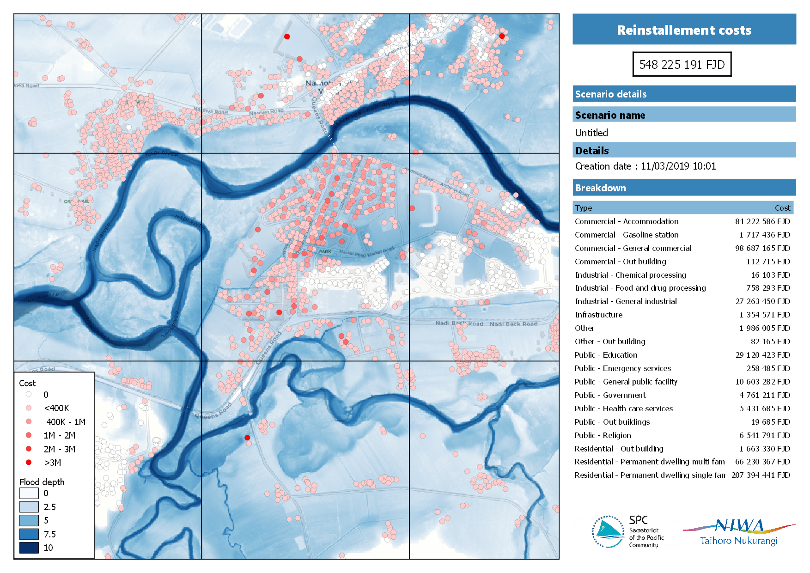
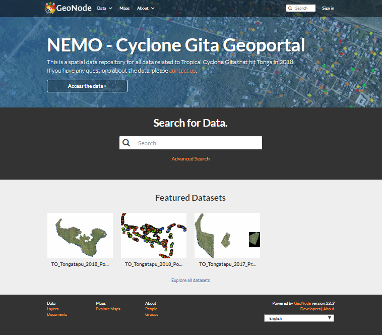
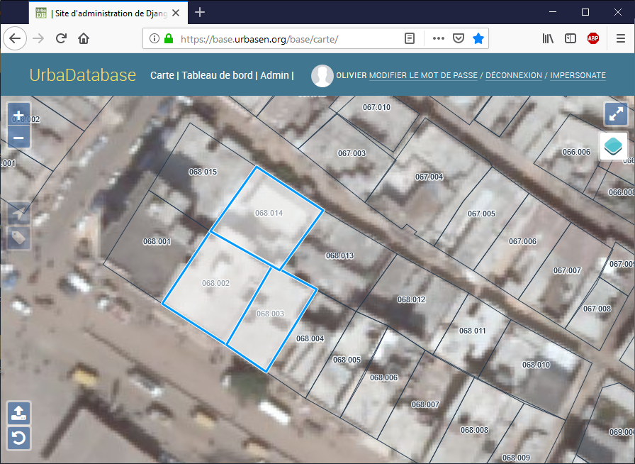
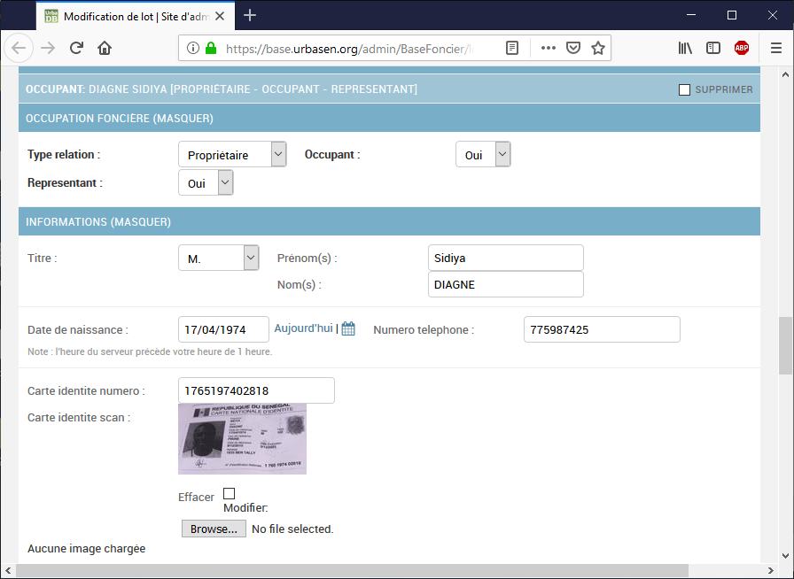
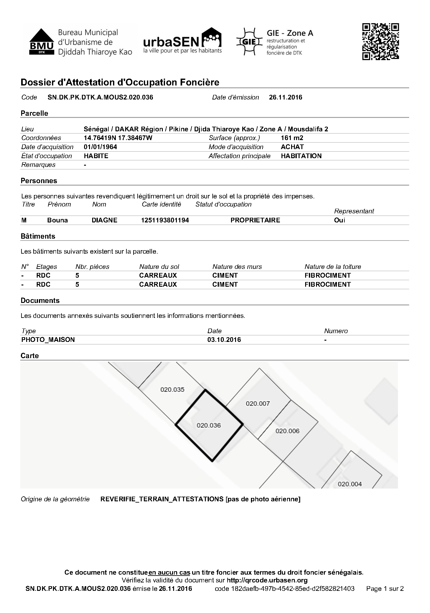
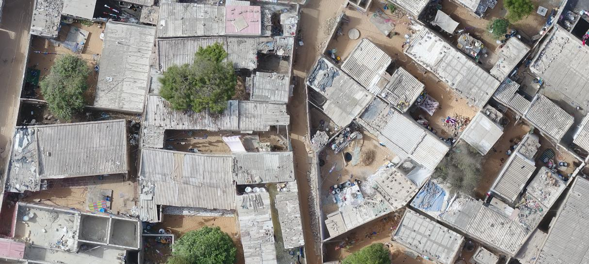
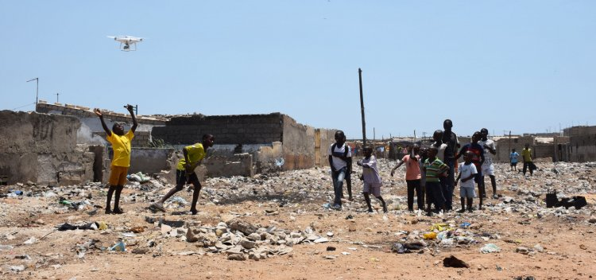
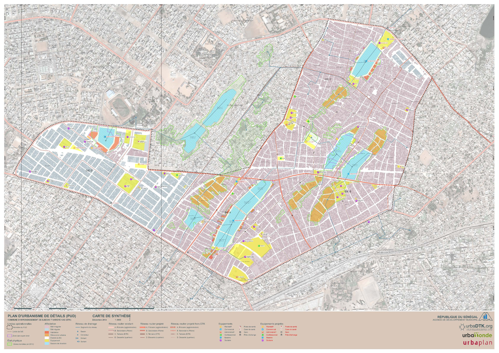
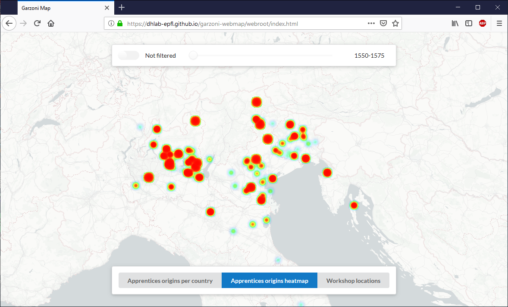
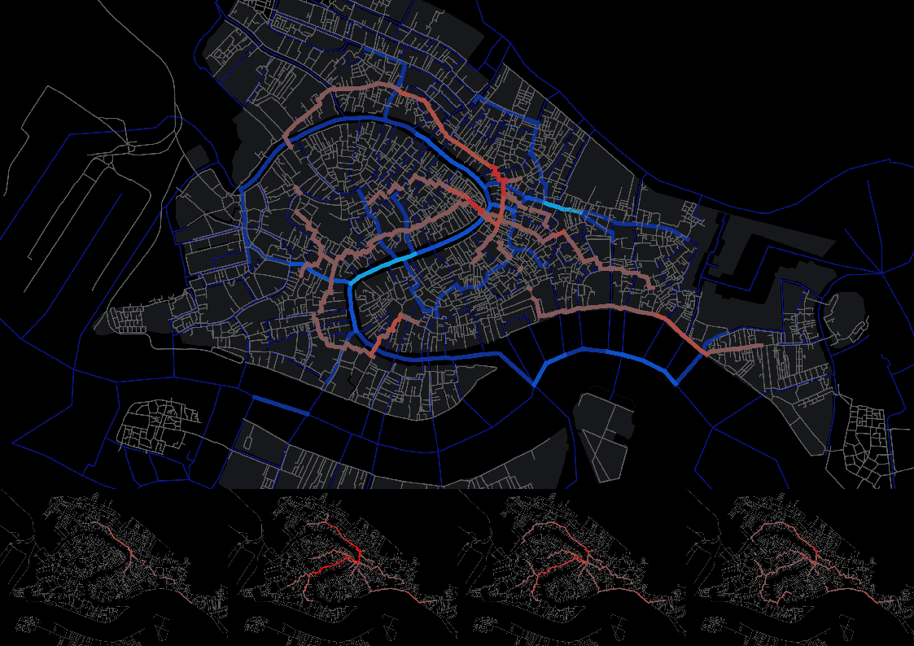

This portfolio presents some of my previous GIS work.
Client : Pacific Community
Country : Fiji
Tools : QGIS, processing models, python plugins
Date : 2018

Example of an automatically generated reinstallement cost analysis
SPC regularly assists Pacific Countries in conducting damage assessments, both before disasters, based on scenarios, to inform preparedness strategies, and post diaster, to inform response.
This project aimed to create workflows to generate such assessments using QGIS. It consisted of a couple of QGIS processing workflows using some custom python algorithms.
Non-technical users were shown how to run the algorithms by just picking the hazard and the exposure layer, to automically generate PDFs.
Intermediate users were shown how to change the outputs by modifing styles or layouts in QGIS.
Advanced users were shown how to create custom analysis by changing the processing models.
Client : Pacific Community
Country : Fiji
Tools : Geonode
Date : 2017-2018
Links : https://github.com/GeoNode/geonode/tree/master/scripts/spcgeonode

Customized Geonode deployment for coordination after cyclone Gita in Tonga
SPC manages several geographical open data portals based on Geonode. Each of those portals was deployed independetly, leading each time to the same technical challenges. The goal of this project was to create a production-ready deployement method for Geonode, allowing to very easily deploy new Geonode data portals.
This method has been contributed back to the main Geonode repository and can now be used to deploy new instances.
Client : UrbaSEN
Country : Senegal
Tools : Django, QGIS
Date : 2016
Visuals : screnshots of UrbaDatabase, screnshots of AOF

Main view of the Django based app

Feature form : attach documents

Generated Occupation Certificate
UrbaSEN is helping the Senegalese Federation of Inhabitants to document informal land ownership in flooded areas. With the local authorities, UrbaSEN is delivering Informal Occupation Certificates.
UrbaDatabase is a Django (Python) based application that allows to collect data in the field, to issue and validate Informal Occupation Certificates. Those certificates contain an automatically generated map showing the land lot.
Client : UrbaSEN
Country : Senegal
Tools : Pix4D
Date : 2016
Links : https://urbasen.org/projets/senegal-flying-lab

Extract of the generated base maps

Flying the drone
In partnership with WeRobotics, UrbaSEN acquired skills in drone based mapping to support the aforementionned project.
The project consisted of training the local team in piloting drones, processing the imagery, loading and analysing it.
Client : UrbaMonde,
Country : Senegal
Tools : QGIS
Date : 2015

Plan d'Urbanisme de Détail
UrbaMonde, in partnership with the local population of Djiddah Thiaroye Kao, the local authorities, and the swiss urban planning firm UrbaPlan, realized the first participartory Plan d'Urbanisme de Détail of Senegal.
The contribution on this project was on the planning process and on the realisation of the final official maps using QGIS.
Client : DHLab / EPFL
Country : Switzerland
Tools : OpenLayers, Virtuoso, python
Date : 2015

Web view of the data
The Digital Humanities Lab at EPFL is conducting a great project on historical data from the states archives of Venice.
The contribution on this project was the creation of editing interfaces and web views for the geographical data retrieved from those archives.
Client : DHLab / EPFL
Country : Switzerland
Tools : OpenLayers, Virtuoso, python
Date : 2014

Network analysis of historical network of venice (Student's work)
The Digital Humanities Lab at EPFL was contributing to a course on urban data visualization. Amongst other things, students where teached how to conduct network analysis using QGIS.
Own QGIS plugins (Python)
Contributions to other QGIS plugins (Python)
Contributions to QGIS core (c++)
Contributions to Geonode (Django, Python)
Contributions to other geospatial tools (Javascript)